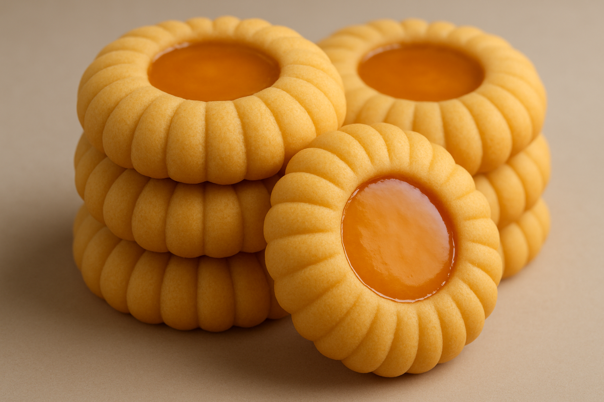

Portakal Kurabyie
Hamuru icin
- 3 su bardagi un
- 3 adet yumurta sarisi
- 1.5 su bardagi pudra sekeri
- 200g tereyag
- 1 paket vanilya
Üzeri icin
Yapilis
Genişçe bir kaba unu koyunuz tereyağını ilave edip
karıştırarak una yediriniz 3 yumurta sarısını pudra
şekerini vanilyayı ilave edip hepsini karıştırarak bir
hamur yapınız hamurdan ceviz büyüklüğünde
parçalar koparıp elimizle yuvarlayıp kenar kısmına
bıçakla çizikler atıp şekil veriyoruz yağlı kağıt serilmiş
tepsiye dizin 160 derece ısıtılmış fırında hafif renk
alana kadar pişirin soğuyan kurabiyelerimizin üzerine
nortakal sosu ile sisleverek servis vanını7